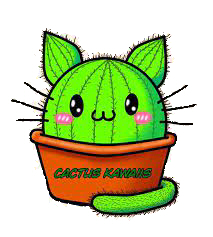

¿Qué es CactusKawaiis?
Saludos mi nombre es Daniela, y CactusKawaiis es un pequeño vivero familiar de Luis Guillon Buenos Aires,
que vende principalmente cactus y suculentas y ocasionalmente tambien otro tipos de plantas.
Les deseo una
buena estadia y tambien los imvito a que se pasen por mis redes sociales (ver contacto) o de forma presencial "Matienzo
1546 Luis Guillon".
salu2
